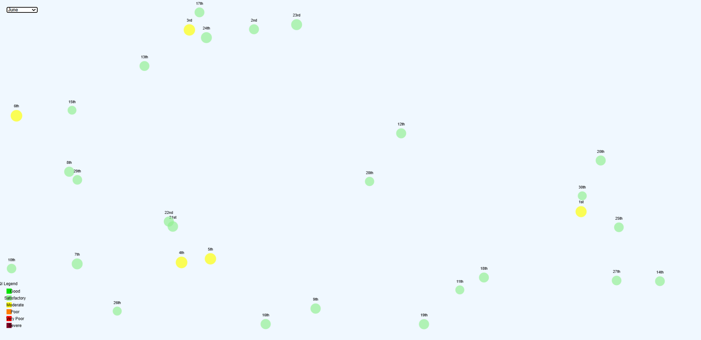
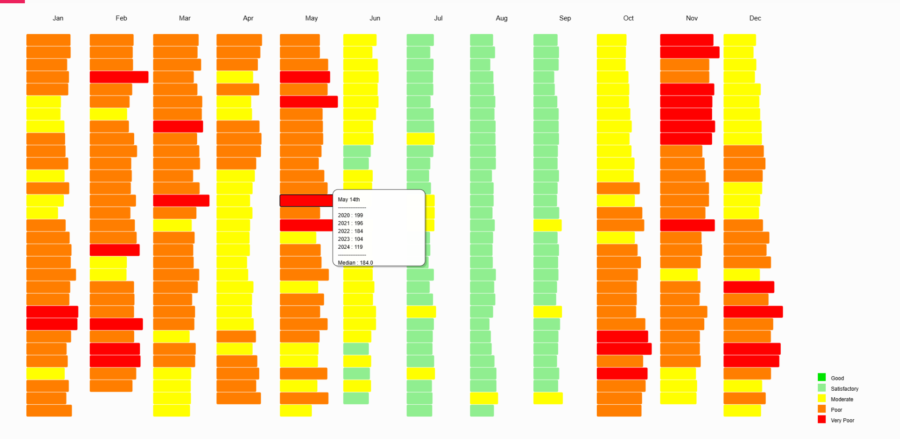
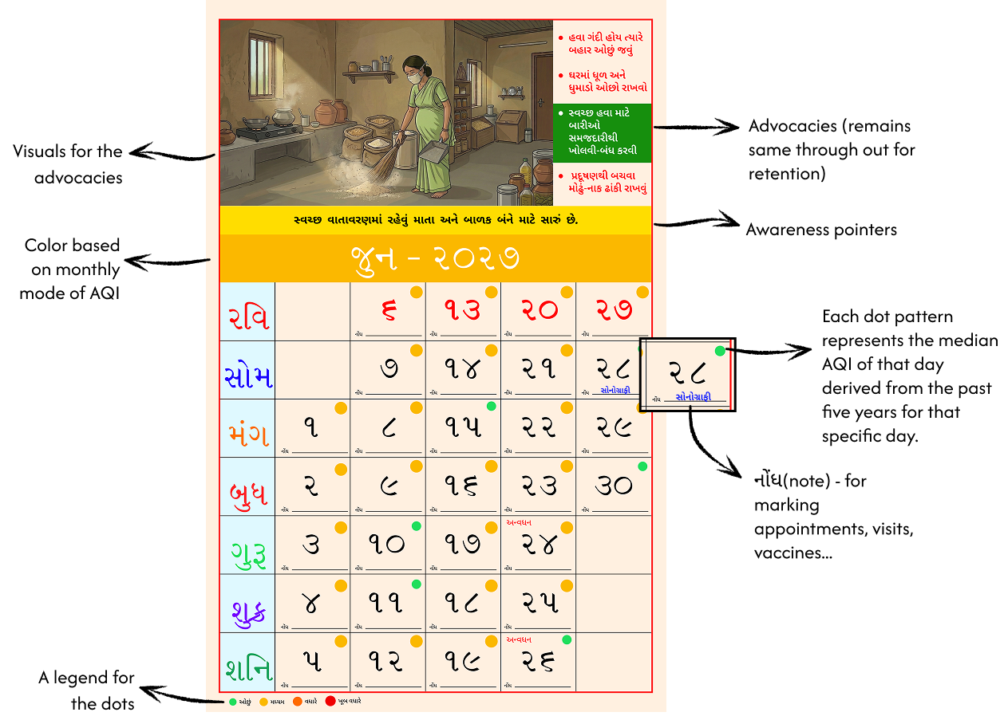
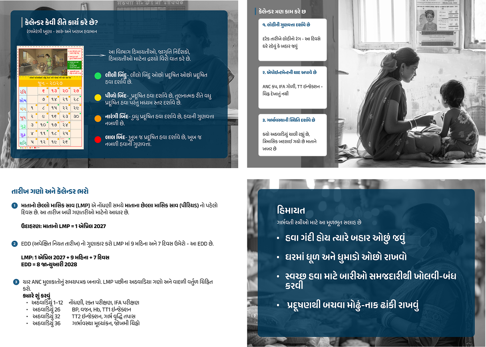

Defining the audience
We focused on expectant mothers from lower socioeconomic backgrounds, considering the relationship between air pollution, health and everyday constraints.
INFORMATION DESIGN·SERVICE DESIGN·PUBLIC HEALTH
Making air quality meaningful for maternal health.
Air quality is often communicated as a number. This project explores how that number can become information expectant mothers can understand, relate to, and use in everyday life.
AQI communicates the state of the air, but the number alone doesn't explain what it means for everyday decisions, especially during pregnancy.
Humanizing AQI explores how air-quality information can become more understandable, relevant and actionable for expectant mothers. Rather than expecting people to interpret technical readings on their own, the project looks at how visual cues and practical guidance could connect changing environmental conditions to maternal health.
How might we make AQI meaningful in everyday life, helping expectant mothers recognise changing pollution levels and consider realistic ways to reduce exposure?
The project moved from defining the audience and understanding the data to exploring formats, translating information and developing the calendar.
We focused on expectant mothers from lower socioeconomic backgrounds, considering the relationship between air pollution, health and everyday constraints.
We examined historical AQI patterns and research on air pollution, particularly PM2.5, and pregnancy. We also considered everyday exposure sources such as cooking and traffic.
We explored formats such as posters, brochures and installations, evaluating their accessibility, visibility and relevance to the Anganwadi context.
We explored how abstract AQI readings could be communicated through simpler visual representations and practical guidance.
We designed a calendar that translates air-quality information into visual cues and guidance, using a familiar format intended to fit into everyday routines.
The project focuses on expectant mothers from lower socioeconomic backgrounds.
We considered how air pollution intersects with daily routines, exposure sources and practical constraints. The aim was not simply to make AQI easier to read, but to make its relevance to maternal health easier to understand.
Anganwadi centres were considered a key service touchpoint because expectant mothers visit them. The concept therefore considers two settings: a calendar that remains visible at home, and supporting material that an Anganwadi worker could use to explain the information and guide conversations.
This was a proposed intervention. The materials had not yet been tested with expectant mothers or Anganwadi workers.
Our research combined historical air-quality data from India's National Air Quality Index website with health-related articles and public-health guidance on air pollution and pregnancy. This helped us explore both how air quality changes over time and why those changes matter to the project.
We worked with AQI as the broader measure of air quality, while paying particular attention to PM2.5 in the health research. PM2.5 is one of the pollutants considered within India's AQI framework, not a substitute for AQI itself.
To compare patterns across the year, we created two p5.js visualisations. These allowed us to select months, inspect daily readings and compare historical values alongside their median. The visualisations helped us explore patterns and inform our discussions about how air-quality information might be communicated through the calendar.
These interactive explorations supported our comparison of historical AQI patterns. Open either visualisation to explore the original work.

OPEN INTERACTIVE ↗Select a month and hover over individual days to inspect their AQI category and underlying historical values.
Explore visualisation ↗
OPEN INTERACTIVE ↗Compare daily readings across months and inspect values from different years alongside the median.
Explore visualisation ↗The visualisations were exploratory tools. They helped us compare historical patterns; they were not a validated daily forecasting model.
A number can describe pollution without explaining how it relates to someone's health or everyday choices.
The opportunity was to bridge that gap by connecting AQI with maternal health through visual cues and practical guidance. Instead of asking users to interpret the data independently, the concept aimed to help them recognise periods of higher concern and understand why they might matter during pregnancy.
We explored different formats, including posters, brochures and installations, before choosing a physical calendar. A calendar is familiar, can remain visible at home and does not require someone to open an app to access the information.
Its year-round format also offers a way to communicate seasonal patterns. We drew on the structure of local calendars so the intervention would feel familiar rather than like an unfamiliar system people had to learn from scratch.
Uses a format people already recognise.
Keeps information in view in everyday spaces.
Connects patterns across the year to daily dates.

The proposed system connects historical AQI patterns with pregnancy-related health guidance through a physical calendar. It moves from understanding the data to communicating it visually, then linking those visual signals to practical suggestions.
Examine historical AQI patterns to explore recurring changes across the year.
Interpret probable pollution levels in relation to maternal-health information.
Use colour-coded dates and simple visual cues to make changing levels easier to recognise.
Pair the cues with practical guidance intended to help people consider ways to reduce exposure.
The calendar's daily levels were based on historical estimates. They should not be read as verified forecasts or as a substitute for official AQI updates or professional medical advice.
The calendar was designed to translate abstract air-quality information into a format that could be recognised at a glance and connected to maternal-health guidance.
The concept also included a brochure for Anganwadi workers. It was intended to explain how to use the calendar, introduce trimester-related risks and support conversations about reducing exposure.

This project shifted my focus from presenting air-quality data to considering how people might interpret it within the context of health and daily routines. The calendar offered a familiar way to communicate changing patterns, while the supporting brochure considered how the information could be introduced and discussed at an existing community touchpoint.
The concept has not yet been tested with expectant mothers or Anganwadi workers. The next step is to evaluate whether the visual cues and guidance are clear and useful to the intended audience, then refine the system based on their feedback before exploring implementation.